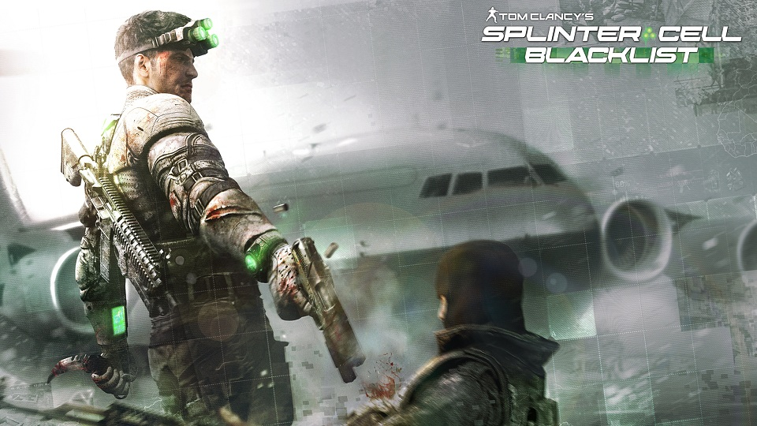

-------------------------------------------------------------------------------- Ubisoft Entertainment Tom Clancy's Splinter Cell® Blacklist™ v1.00 August 2013 README.TXT --------------------------------------------------------------------------------  Thank you for purchasing Tom Clancy's Splinter Cell® Blacklist™! ================================================================================ Table of Contents ================================================================================ 1. Installation Instructions 1.0. System Requirements 1.0.1 Minimum Configuration 1.0.2 Recommended Configuration 1.0.3 Supported Video Cards at Time of Release 1.0.4 Supported Controllers List at Time of Release 1.1. Language Selection 1.2. Uninstallation 2. General Notes 2.1. Display/Performance Settings 2.2. DX9/DX11 Settings 2.3. Uplay PC 3. Known Issues 3.1. Installing Video Drivers 3.2. Installing Sound Drivers 3.3. Installing DirectX 3.4. Hints 4. Important Web Sites, Contact Information and Technical Support 4.1. Technical Support 4.2. Important Web Sites 5. Legal Information ================================================================================ 1. Installation Instructions ================================================================================ 1.0. System Requirements IMPORTANT! Ensure that Windows® XP has Service Pack 3 (or better) or that Windows Vista® has Service Pack 2 (or better) or that Windows® 7 has Service Pack 1 (or better). 1.0.1 Minimum Configuration: Operating System: Windows® XP (with SP3) or Windows Vista® (with SP2), Windows® 7 (with SP1) or Windows® 8 (32bit & 64bit for all OS's) Processor: Intel® Core®2 Duo E6400 @ 2.53 GHz or better AMD Athlon64 X2 5600+ @ 2.8 GHz or better RAM: 2 GB Video card: 512MB VRAM with Shader Model 4.0 or higher nVidia™ GeForce® 8800GT or better AMD™ Radeon HD3870 or better See Supported List 1.0.3 for more information. DVD-ROM: DVD-ROM Dual Layer DirectX: DirectX 9.0c (June 2010) Hard Drive Space: 25 GB Sound: DirectX 9.0c Compatible Sound Card with Latest Drivers Input Devices: Windows-compatible keyboard and mouse required Optional controller (See Supported Controllers List 1.0.4 for more information). 1.0.2 Recommended Configuration: Operating System: Windows® XP (with SP3) or Windows Vista® (with SP2), Windows® 7 (with SP1) or Windows® 8 (32bit & 64bit for all OS's) Processor: Intel® Core®2 Quad Q8400 @ 2.6 GHz AMD Phenom II X4 940 @ 3.0 GHz RAM: 4 GB Video card: 1024MB VRAM DirectX 11 with Shader Model 5.0 or higher See Supported List 1.0.3 for more information. DVD-ROM: DVD-ROM Dual Layer DirectX: DirectX 9.0c (June 2010) Hard Drive Space: 25 GB Sound: DirectX® 9.0c Compatible Sound Card 5.1 with Latest Drivers Input Devices: Windows-compatible keyboard and mouse required Optional controller (See Supported Controllers List 1.0.4 for more information). 1.0.3 Supported Video Cards at Time of Release: NVIDIA GeForce™ 8 Series - GeForce 8800 GT or better NVIDIA GeForce™ 9 Series NVIDIA GeForce™ GT200 Series NVIDIA GeForce™ GT400 Series NVIDIA GeForce™ GT500 Series NVIDIA GeForce™ GT600 Series NVIDIA GeForce™ GT700 Series AMD® RADEON® HD 3000 Series - HD 3870 or better AMD® RADEON® HD 4000 Series AMD® RADEON® HD 5000 Series AMD® RADEON® HD 6000 Series AMD® RADEON® HD 7000 Series 1.0.4 Supported Controllers List at Time of Release: Razer Onza Logitech F310 Logitech F510 Rumble Logitech F710 Wireless Saitek Cyborg P3600 Xbox 360 Controller -------------------------------------------------------------------------------- 1.1. Language Selection The language selected at the start of the installation is the language that the game will launch in by default. To change the language, please go to the in-game menu and change to an available language shown. -------------------------------------------------------------------------------- 1.2. Uninstallation Tom Clancy's Splinter Cell® Blacklist™ can be uninstalled from the Add/Remove Programs icon located in the Control Panel (Start->Settings->Control Panel). Locate the Tom Clancy's Splinter Cell® Blacklist™ entry and click on the Change/Remove button, then follow the instructions on-screen to uninstall the game. ================================================================================ 2. General Notes ================================================================================ 2.1. Display/Performance Settings The Graphical Settings can directly impact the memory usage of the game. If your computer lacks RAM memory, these settings should be lowered down accordingly. There are some video card drivers that may cause flickering and disappearing objects. It is important to make sure the latest available drivers are installed. -------------------------------------------------------------------------------- 2.2. DX9/DX11 Settings When launching the game for the first time, the game will detect the highest supported DX setting your video card is capable of (either DX9 or DX11) and set this as default. The DX setting can then be changed in the in-game menu. -------------------------------------------------------------------------------- 2.3. Uplay PC This game requires a one-time online activation via Uplay PC. Create a new Uplay account in the Uplay applicaiton or at Uplay.com or use your existing Uplay account and the Unique Key that came with your game to bind the game to your account. Launching the game after this one-time application is possible in online and offline mode. Not all game functionality is available in Offline Mode. For Uplay licenses see the installation directory of the Uplay application and check the data\resources\LICENSES.TXT file For support with the Uplay PC application visit: http://cs.ubi.com/ ================================================================================ 3. Known Issues ================================================================================ 3.1. Installing Graphics and Motherboard Drivers If you experience any graphical problems, please install the latest video and motherboard drivers available for your Graphics Card. Links to the most popular Graphics Card and motherboard manufacturers are available at the bottom of this document. -------------------------------------------------------------------------------- 3.2. Installing Sound Drivers If you experience any sound problems, please install the latest sound drivers available for your sound card. Links to the most popular sound card manufacturers are available at the bottom of this document. -------------------------------------------------------------------------------- 3.3. Installing DirectX Tom Clancy's Splinter Cell® Blacklist™ requires DirectX runtime libraries from June 2010 or later to run properly. To get the latest version of DirectX, please visit: http://www.microsoft.com/download/ DirectX is also provided on the install disc in the folder Support\DirectX and automatically installed when you install Tom Clancy's Splinter Cell® Blacklist™. If you receive an error message about missing DLL files, reinstall DirectX from the install disc to correct the problem. -------------------------------------------------------------------------------- 3.4. Hints * It is not advisable to install the game into the Windows folder (usually C:\Windows), a subfolder of the Windows folder, nor the root of the system drive (usually C:\). * It is recommended to close all other running programs before installing the game, to reduce the risk of software conflicts. * If you experience graphical corruption, make sure your graphics driver's control panel is not configured to override application settings. * Vibration support is only supported if using the Xbox 360 controller. ================================================================================ 4. Important Web Sites, Contact Information and Technical Support ================================================================================ 4.1. Technical Support Before contacting Ubisoft Entertainment's Technical Support Department, please browse through our FAQ listings or search our support database at our web site: http://support.ubi.com. Here you will find the most recently updated information since the game's release. Also please make sure that your computer meets the minimum system requirements, as our support representatives will be unable to assist customers whose computers do not meet these criteria. Whenever you contact the Technical Support Department, please include the following information or have it available if you are calling: -Complete product title (including version number) -Exact error message reported (if applicable) and a brief description of the problem you're encountering -Processor speed and manufacturer -Amount of RAM -Operating system -Graphics Card that you are using and amount of RAM it has -Make and speed of your CD-ROM or DVD-ROM drive -Type of sound card you are using Contact Us via the Internet This is the best way to contact us. Our web site is open 24 hours a day, 7 days a week, and it contains the most up-to-date Technical Support information available, including patches that can be downloaded free of charge. We update the Support pages on a daily basis so please check here first for solutions to your problems: http://support.ubi.com/. Contact Us by E-mail For fastest response via e-mail, please visit our web site at: http://support.ubi.com/ From this site, you will be able to enter the Ubisoft Entertainment Solution Center where you can browse through our listings of Frequently Asked Questions (FAQ), search our database of known problems and solutions, or, for fastest e-mail response, you can send in a request for Personal Assistance from a Technical Support Representative. It may take up to 72 hours for us to respond to your e-mail depending upon the volume of messages we receive. Return Policy Please do not send any game returns directly to Ubisoft before contacting Technical Support. It is our policy that game returns must be dealt with by the retailer or online site where you purchased the product. If you have a damaged or scratched game disk, please visit the FAQ listing for your game and get the latest replacement policy and pricing. We will not accept unsolicited returns/exchanges without prior approval and an RMA (Return Materials Authorization) number from a support representative. -------------------------------------------------------------------------------- 4.2. Important Web Sites Tom Clancy's Splinter Cell® Blacklist™ official web site: http://splintercell.ubi.com/ DirectX End-User Runtime: http://www.microsoft.com/download/ Latest AMD Drivers: http://support.amd.com/ Latest NVIDIA Drivers: http://www.nvidia.com/drivers/ Latest Intel Drivers: http://downloadcenter.intel.com/ Latest Creative Labs Drivers: http://support.creative.com/ ================================================================================ 5. Legal Information ================================================================================ Tom Clancy's Splinter Cell® Blacklist™ © 2013 Ubisoft Entertainment. All Rights Reserved. Tom Clancy's Splinter Cell® Blacklist™, Uplay logo, Ubisoft, Ubi.com and the Ubisoft logo are trademarks of Ubisoft Entertainment in the US and/or other countries.